Krumplitermesztés és Krumplifajták
A burgonya, vagy ahogy sokan nevezik, a krumpli, az egyik legfontosabb és leggyakrabban termesztett élelmiszer világszerte. Nemcsak tápláló, hanem rendkívül sokoldalúan felhasználható növény is, amely számos étel alapját képezi a különböző kultúrák konyháiban. A krumpli története egészen Dél-Amerikáig nyúlik vissza, ahol az inkák már évezredekkel ezelőtt termesztették. Mára a világ szinte minden országában elterjedt, és nemcsak mint alapvető élelmiszer, hanem mint gazdaságilag jelentős haszonnövény is fontos szerepet játszik. A globális élelmiszerbiztonság szempontjából is jelentős, hiszen viszonylag kis területen is nagy mennyiségben termeszthető, és magas tápértékű termést biztosít.
A krumplitermesztés sikeressége nagyban függ a környezeti tényezőktől, mint a talaj minősége és a klíma. A burgonya a jó vízelvezetésű, tápanyagban gazdag talajt kedveli, és bár viszonylag hidegtűrő növény, a fagyokat kerülni kell. A termesztési folyamat során fontos a megfelelő gondozás, mint például a gyommentesítés és a növények rendszeres öntözése. A krumpliérési idő fajtától függően változó, de általában a vetéstől számítva 70-120 nap alatt takarítható be. A betakarítás után a burgonya megfelelő tárolása is elengedhetetlen, hogy a termés frissességét és minőségét hosszabb ideig megőrizhessük.
A burgonya különböző fajtái más-más felhasználási területre ideálisak. Például a piros héjú Desirée kiválóan alkalmas sütésre és főzésre, mivel belül krémes állagú, és jól megtartja formáját hőkezelés közben. Az Agria nagyobb méretű, sárga húsú fajta, amely tökéletes hasábburgonyának vagy krumplipüréhez, míg a Charlotte egy kisebb, hosszúkás fajta, amelyet leggyakrabban salátákhoz vagy pároláshoz használnak. Minden burgonyafajtának megvan a maga egyedi tulajdonsága és felhasználási módja, ezért érdemes körültekintően választani, hogy a legjobban illeszkedjen a tervezett ételhez. Az útmutató további részeiben részletesebben megismerkedhetsz ezekkel a fajtákkal és a termesztési módszerekkel, hogy a lehető legjobb eredményeket érhesd el.
A krumpli termesztésének folyamata
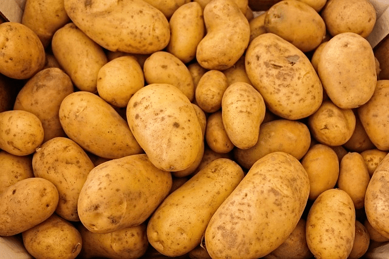
Talaj előkészítése:
A burgonya jól növekszik laza, jó vízelvezetésű talajban. Fontos, hogy a talaj tápanyagban gazdag legyen,
ezért javasolt komposztot vagy más szerves trágyát használni a talaj előkészítésekor. A talaj pH-értéke
optimálisan 5,5 és 6,5 között legyen.
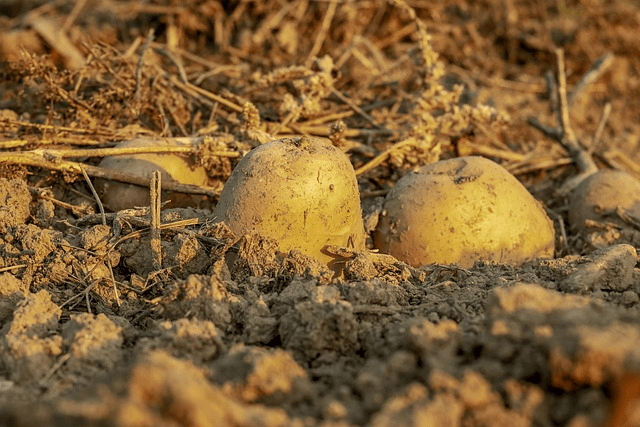
Ültetés:
A krumplit tavasszal ültetik, amikor a talaj hőmérséklete elérte a 7-10°C-ot. Az ültetéshez a
vetőburgonyát kisebb darabokra vágják, ügyelve arra, hogy minden darabon legyen legalább egy szem. Az
ültetési mélység körülbelül 10-15 cm legyen, és a növények közötti távolság 30-40 cm, hogy elég hely
legyen a gumók növekedéséhez.
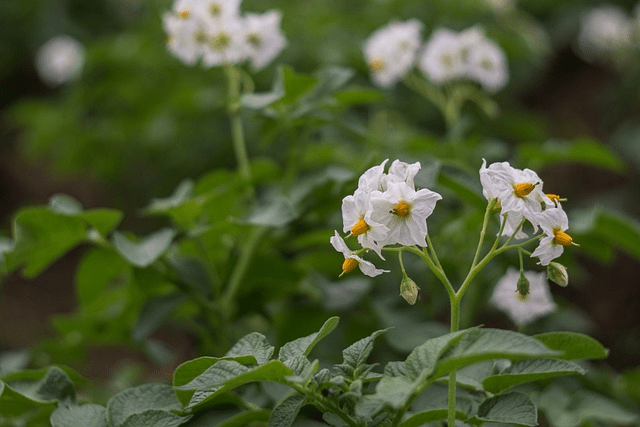
Gondozás:
A krumplinövény rendszeres öntözést igényel, különösen a gumók fejlődése során. Fontos, hogy ne legyen
túlöntözve, mert ez gombás betegségek kialakulásához vezethet. A növények köré halmokat kell kialakítani,
hogy a gumók a föld alatt maradjanak, és ne érintkezzenek közvetlenül a napfénnyel, ami zölddé és
mérgezővé teheti őket.
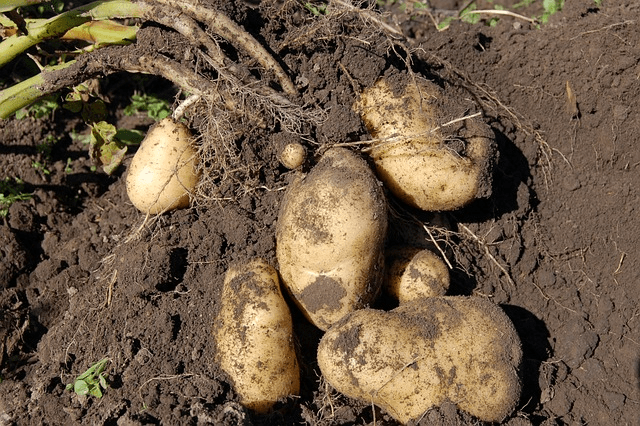
Betakarítás:
A betakarítást akkor kell elvégezni, amikor a növények levelei megsárgulnak és elszáradnak, ami általában
90-120 nappal az ültetés után történik. A krumplit kézzel vagy géppel óvatosan kiásva lehet betakarítani,
hogy ne sérüljenek a gumók.
Krumplifajták
A burgonyafajták sokfélesége lehetővé teszi, hogy különböző ízeket, textúrákat és főzési módokat kipróbáljunk. Íme néhány népszerű krumplifajta:
| Kép | Burgonya Fajta | Leírás |
|---|---|---|
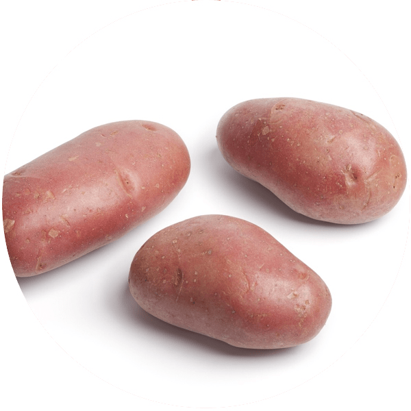 |
Desirée | Ez a piros héjú burgonya kiválóan alkalmas sütésre és főzésre is. Belül sárga, íze enyhén vajas, és jól megtartja az állagát sütés közben. |
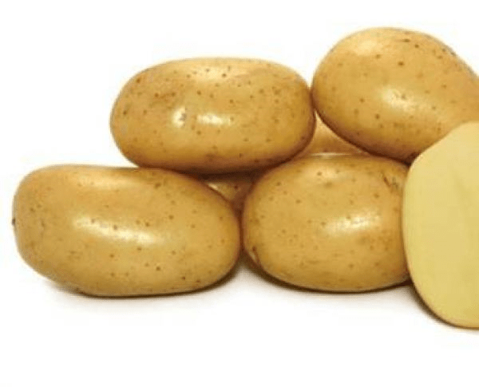 |
Agria | Az Agria burgonya nagy, sárga húsú fajta, amely elsősorban sütésre, krumplipüré készítésére és hasábburgonya előállítására ideális. Kiváló textúrája van, és jó ízű. |
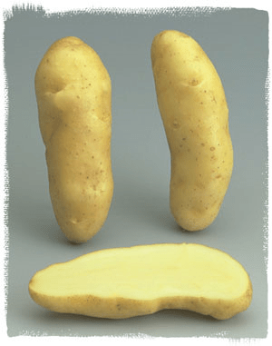 |
Charlotte | A Charlotte egy kis méretű, hosszúkás burgonyafajta, amelyet gyakran használunk salátákhoz vagy pároláshoz. Krémes állaga és enyhén édeskés íze van, amely tökéletesen illik a könnyű ételekhez. |
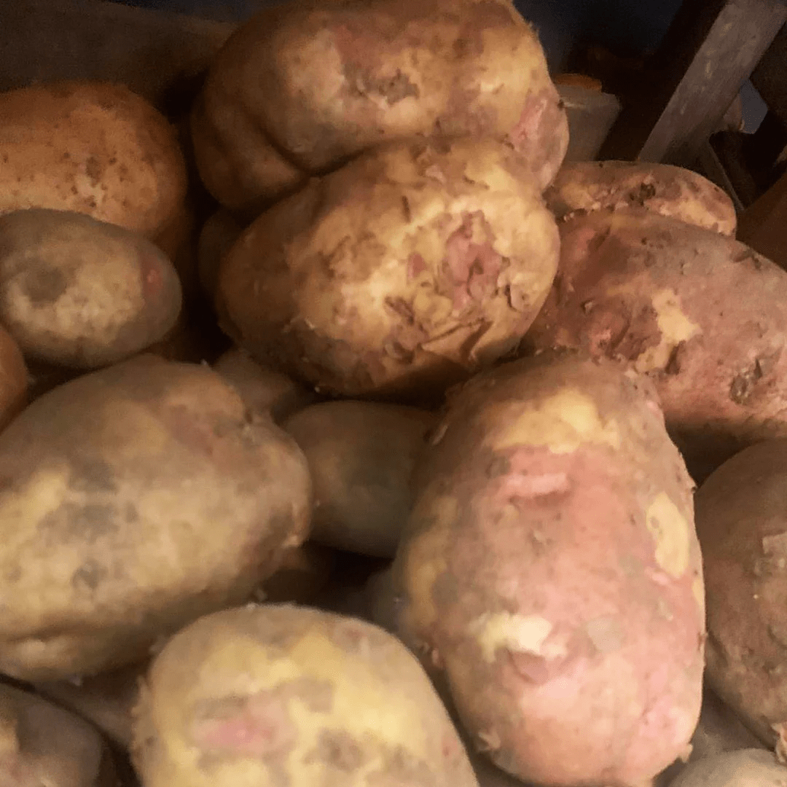 |
Maris Piper | Az egyik legnépszerűbb brit fajta, a Maris Piper fehér húsú és ideális sültkrumplihoz. Kiváló szerkezetű, ropogósra sül, miközben belül puha marad. |
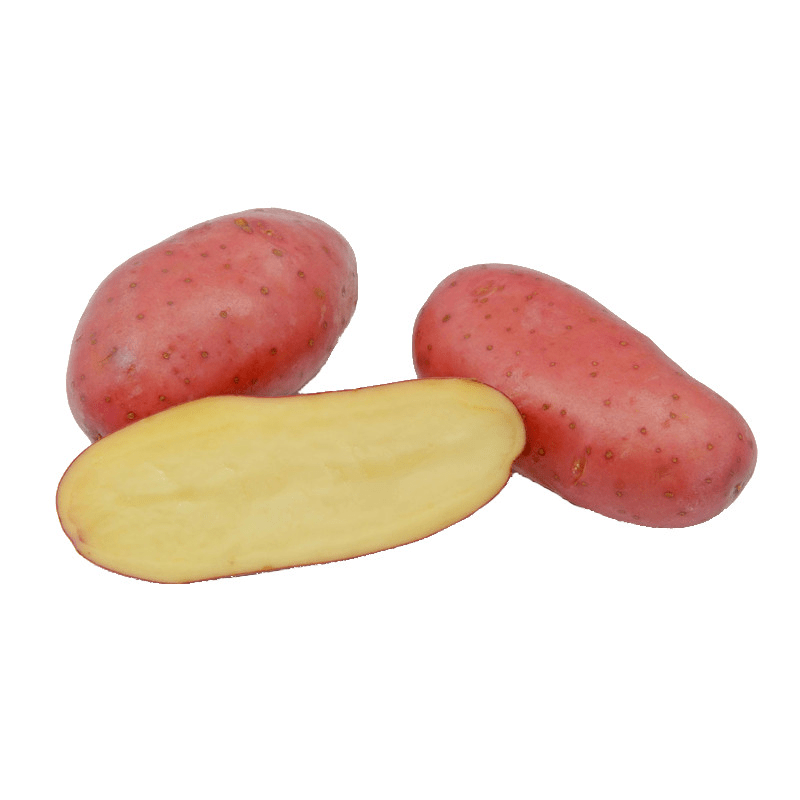 |
Kifli burgonya | Hosszúkás, vékony héjú fajta, amely kiváló párolt vagy főtt formában, például salátákban. Íze lágy és krémes, textúrája pedig finom. |
A krumpli termesztése és a megfelelő fajta kiválasztása fontos lépés a sikeres betakarítás érdekében. Akár kis konyhakertben, akár nagyobb méretekben termesztjük, a megfelelő gondoskodás és fajtaválasztás biztosítja a bőséges és ízletes termést.
Receptek
A krumpli az egyik legsokoldalúbb alapanyag a konyhában, amely szinte végtelen lehetőséget kínál a különböző ételek elkészítéséhez. Felhasználhatjuk főzve, sütve, püréként, vagy akár ropogós hasábburgonyaként. A krumpliból készült krémes burgonyapüré a klasszikus köretek közé tartozik, míg a tepsiben sült, fűszeres burgonyacikkek remek választás lehetnek főételek mellé. A levesek és egytálételek alapanyagaként is nagyszerű, hiszen jól felszívja a különböző ízeket, például a magyaros gulyásban vagy a krémes burgonyalevesben is.
A salátákhoz is kiváló, különösen olyan fajták, mint a kifli burgonya, amelyek párolva vagy főzve megtartják finom, krémes állagukat. Hideg burgonyasaláták készítéséhez is gyakran használják, ahol a krumpli jól illik ecetes, mustáros, vagy éppen majonézes öntetekhez.
Továbbá, a krumplit rakott ételekben, például rakott krumpliban vagy gratinburgonyában is alkalmazhatjuk, ahol sajttal, tejszínnel, húsokkal rétegezve süthetjük meg. A lehetőségek szinte végtelenek, és a krumpli egyszerűségében rejlik az egyik legnagyobb értéke.
Kiemelt receptek
- Rakott krumpli
- Töltött krumpli
- Krumplis fánk
- Krumplis pogácsa
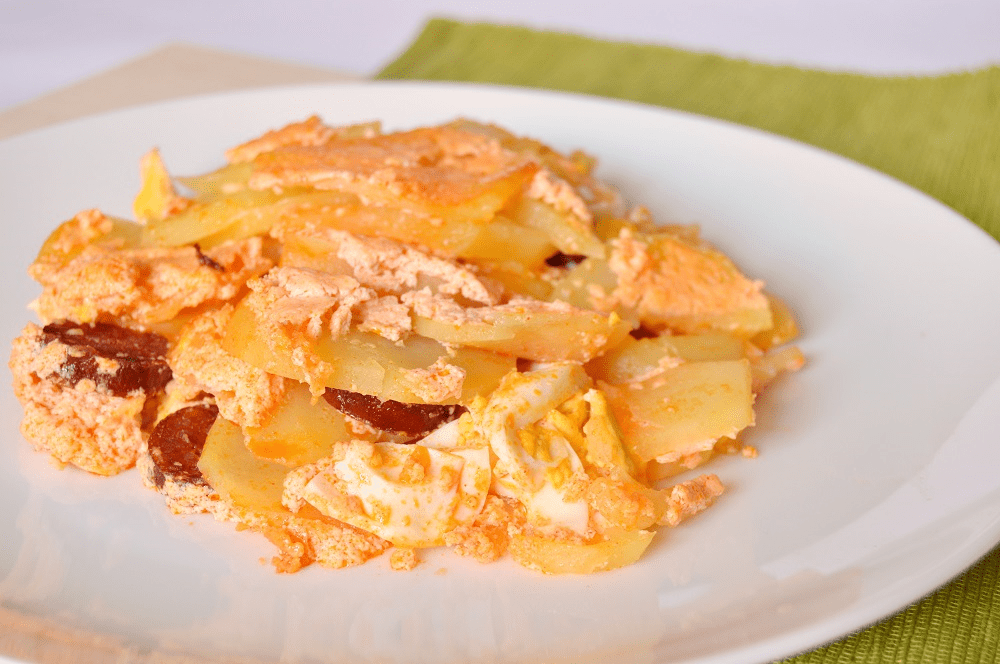
Rakott Krumpli
Egyik legkedveltebb krumplis étel amelyet fel lehet dobni kolbásszal, tojással és tejföllel. Van aki még sajtot is tesz rá, amivel finom ízt lehet neki kölcsönözni
Rakott krumpli receptTöltött krumpli
Krumplit meg lehet tölteni akár hússal, sajttal, gombával. A tölteték ízvilágának csak a képzelet szab határt! Majd süssük ropogósra és már tálalhatjuk is!
Töltött krumpli recept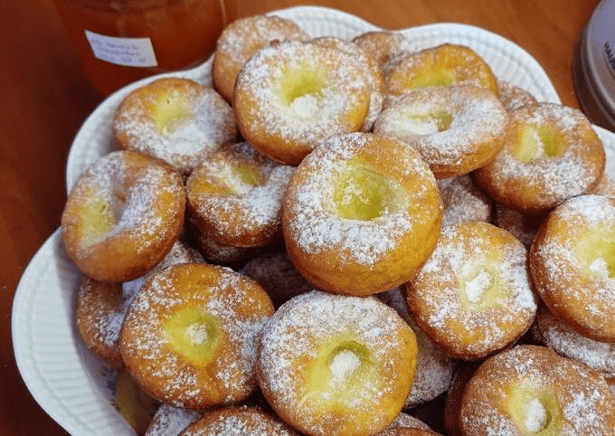
Krumplis fánk
A farsangi időszak kedvence a krumplis fánk. Lekvárral megtöltve, porcukorral megszórva nagyon finom sütit készíthetünk nem csak a farsangi időszakban!
Krumplis fánkKrumplis pogácsa
Egyik legkedveltebb krumplis étel amelyet fel lehet dobni kolbásszal, tojással és tejföllel. Van aki még sajtot is tesz rá, amivel finom ízt lehet neki kölcsönözni
Krumplis Pogácsa